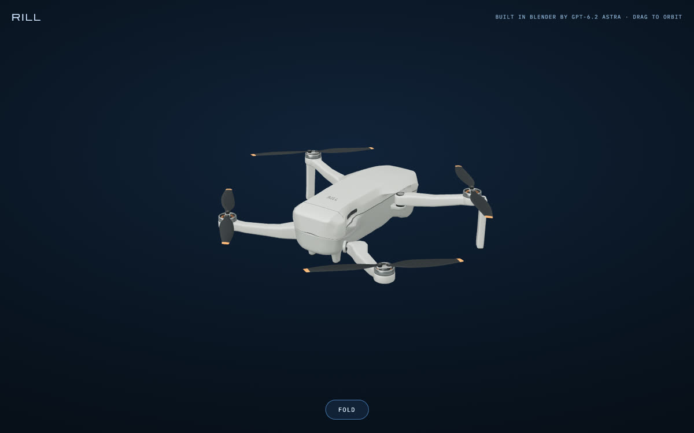
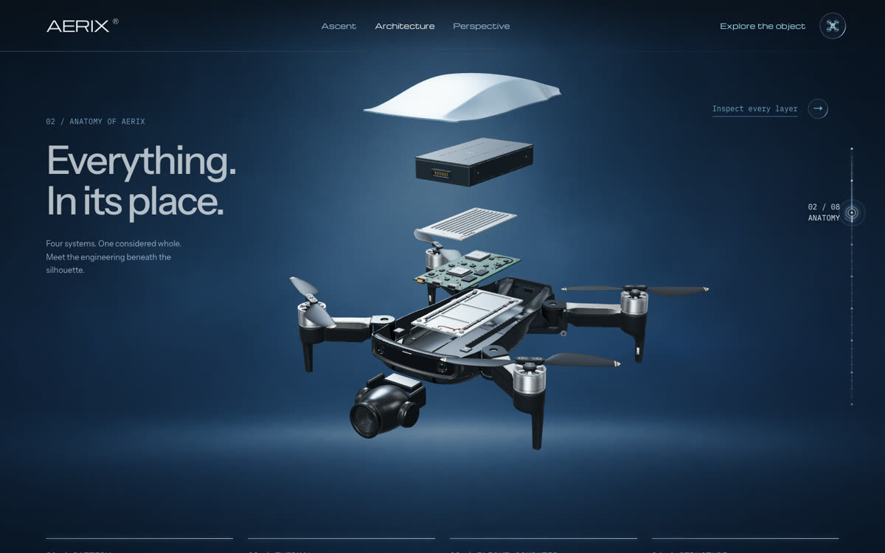

The page, the drone and every prompt.
Everything from the video: the AERIX landing page, the RILL drone that GPT-6.2 Astra built in Blender, a vocabulary sheet with a prompt for every effect, and all the prompts I used.
Start with the vocabulary. Once you know what an effect is called, you can ask any agent for it.

The landing page
The AERIX page from the video, as one file. Double-click it, no install. The source is in the page folder.
Open the page →
The RILL 3D model
The drone GPT-6.2 Astra built in Blender, in a viewer you can turn and fold. The .glb and the Blender scripts are next to it.
Open the model →
Vocabulary
21 techniques from the page, each with its name, what it does and a prompt to paste into your agent.
Learn the words →
Prompts
The starter prompt, the four Higgsfield world prompts with settings and cost, and every message that built RILL.
Read the prompts →